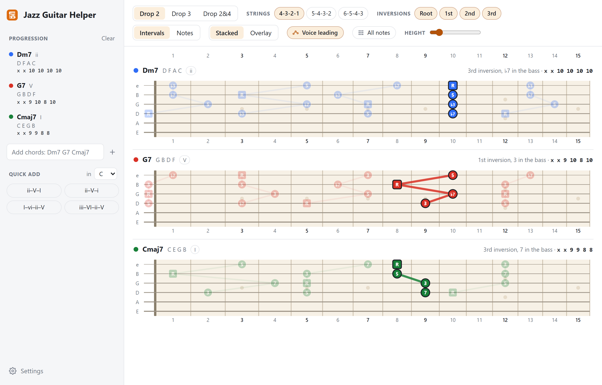

Jazz Guitar Helper
Jazz Guitar Helper
See every drop voicing of a chord progression on the guitar fretboard at once. A small desktop app for Windows and macOS.

- Type a progression's chord symbols, such as
Dm7 G7 Cmaj7, or add a ii–V–I, ii–V–i, I–vi–ii–V or iii–VI–ii–V in any key - Drop 2, Drop 3 and Drop 2&4 voicings on any of their string sets, in every inversion
- A fretboard per chord, lined up fret by fret, or all the chords on one fretboard in their own colors
- Every note of each chord on the whole neck, with intervals or note names
- Pin a voicing, and voice leading finds the closest voicings of the other chords on the same strings
- Light or dark, left-handed, 12 to 24 frets
- Updates itself with one click
Jazz Guitar Helper is free and open source (MIT license). Download the latest version or see the source code on GitHub. If it's useful to you, you can support its development.
The app isn't code-signed yet, so the first time you open it your system asks first. On Windows, click More info, then Run anyway. On a Mac, open it once, then click Open Anyway in System Settings → Privacy & Security. The first-launch steps show it in detail.
Jazz Guitar Helper runs entirely on your computer, with no account, no analytics and no servers of its own. It talks only to GitHub, to check for updates. Read the Privacy Policy for details.
Contact: andeliseev@gmail.com · GitHub · Privacy Policy · Support